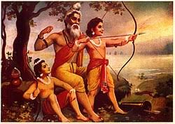

uttar kand

Uttar Kand is the last adhyay of Ramayana. It is a adhyay of made up of conversations between Kakbhusundi and Garud. This book was added by Tulsidas after hearing it from Kakbhusundi and Garud. It depicts Ram's reign of Ayodhya, birth of Luv and Kush, the Ashvamedha yagna and last days of Rama. At the expiration of his term of exile(wanwas), Rama returns to Ayodhya with Sita, Lakshmana and Hanuman, where the coronation is performed. On being asked to prove his devotion to Rama, Hanuman tears his chest open and to everyone's surprise, there is an image of Rama and Sita inside his chest. Rama rules Ayodhya and the reign is called 'Ram-Rajya'.
This is a kand which was not written neither in the original Valmiki Ramayan nor by Tulsidas' Ramcharitmanas. This is totally an chapter added afterwards and no authentication of this chapter is seen in original Ramayana of Valmiki. In this chapter, as time passes in reign of Rama, spies start getting rumours that people are questioning Sita's purity as she stayed in the home of another man for a year without her husband. The common folk start gossiping about Sita and question Ram's decision to make her Queen. Rama is extremely distraught on hearing the news, but finally tells Lakshmana that the purity of the Queen of Ayodhya has to be above any gossip and rumour. He instructs him to take Sita to a forest outside Ayodhya and leave her there. Further, to tell her not to identify herself as the Queen of Ayodhya as that would be an insult to our forefathers. Lakshmana reluctantly drops Sita in a forest for another exile(wanwas).
Sita finds refuge in Sage Valmiki's ashram, where she gives birth to twin boys, Luv and Kush. Shambuka, a shudra ascetic, is slain by Rama for attempting to perform penance. This act of Shambuka is perceived by Rama as an act in violation of dharma as he believes that the bad karma, resulting from this act, caused the death of a Brahmin's son in his kingdom.Meanwhile, Rama conducts an Ashwamedha yagna (A holy declaration of the authority of the king). Luv and Kusha capture the horse (sign of the yagna) and defeat the whole army of Ayodhya which come to protect the horse. Later on, both the brothers defeat Lakshmana, Bharat, Shatrughan and other warriors and take Hanuman as prisoner. Finally Rama himself arrives and defeats the two mighty brothers. Valmiki updates Sita about this development and advises both the brothers to go to Ayodhya and tell the story of Sita's sacrifice to the common folks. Both brothers arrive at Ayodhya but face many difficulties while convincing the people. Hanuman helps both the brothers in this task . At one point of time, Valmiki brings Sita forward. Seeing Sita, Rama realises that Luv and Kush are his own sons. Again complicit Nagarsen (One of the primaries who instigated the hatred towards Sita) challenge Sita's character and asked her to prove her purity. Sita is overflown with emotions and decides to go back to Mother Earth from where she emerged. She prays to her mother Bhoomidevi (Goddess of Earth), the ground breaks into half and closes after Sita vanishes into it. Rama rules Ayodhya for many years and finally takes samadhi into River Sarayu along with his 3 brothers and leaves the world. He goes back to Vaikunth in his Vishnu form.